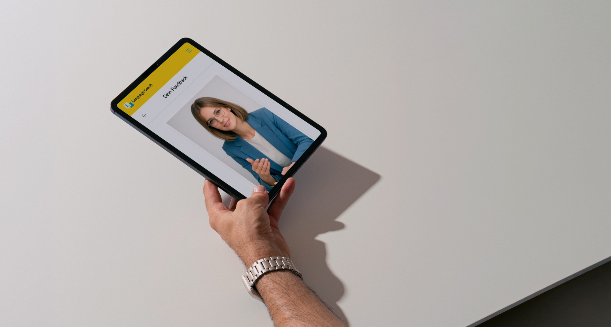
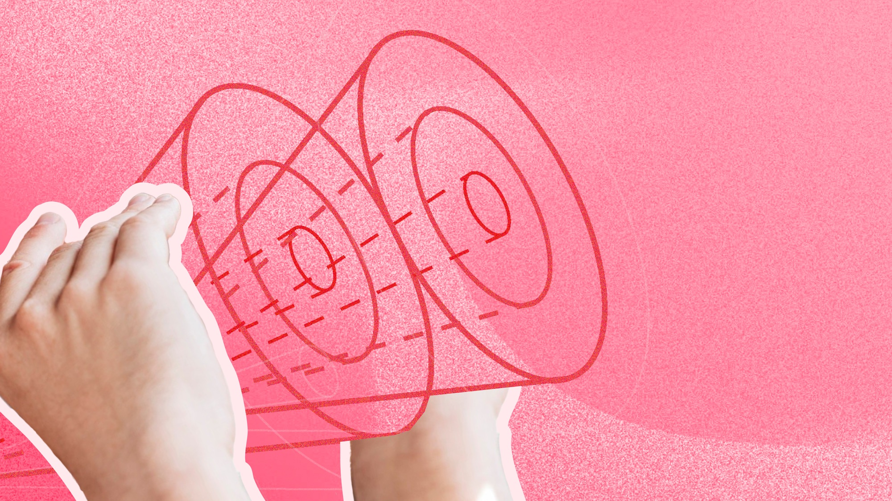

UX Designer & Engineer
Johanna Ober
Hi, I am a senior UX Designer focused on AI in education technologies.
Over the past ten years, I have gained experience across EdTech, automotive, print media and public sector.

UX Designer & Engineer
Hi, I am a senior UX Designer focused on AI in education technologies.
Over the past ten years, I have gained experience across EdTech, automotive, print media and public sector.

ELLA – Lifelong Learning with AI

Langenscheidt Language Coach

BIRD Education Platform

Mobile-First Car UX

Little Food Fighters
Titanom Solutions
Germering, DE
UX/UI Design
AI-powered Learning & Management Systems
Learner Centered DesignHuman-AI InteractionAccessibility
AUDI AG
Ingolstadt, DE
UX Concepter
Physical & Digital Car Interaction Concepts
Final Thesis "Mobile-First Car UX"
Speculative DesignUser TestingIcon Design
AKKODIS
Sindelfingen, DE
Graphic & UI Designer
B2B & B2C Software Solutions
UI RedesignsUser ResearchUser TestingVisual Design
Kaleon Media GmbH
Rosenheim, DE
Graphic & Web Designer
B2B Software Solutions
Web DesignSocial MediaWireframingBrandingLogo Design
F&W Druck- & Mediencenter
Kienberg, DE
Managing Product Designer
B2B, B2C & Inhouse Print Products
ConsultingProduction PlanningDesignData Processing
Titanom Solutions
Germering, DE
Product Engineer Training
Media University Stuttgart
Stuttgart, DE
Bachelor of Arts in Information Design
Interaction DesignUX DesignHCDUser ResearchInformation Visualisation
Linköping University
Linköping, SE
Exchange Semester
Communication DesignLearner Centered DesignExhibition DesignSustainable Design
BSZ Alois-Senefelder
Munich, DE
Apprenticeship in Media Design
Print DesignDigital MediaDesign PrinciplesTypography
Design Skills
User ResearchUser TestingWorkshop FacilitationPrototypingHCDInteraction DesignLearner-Centred DesignAccessibility
Tools
FIGMAMIROAdobe CCHTMLCSSJavaScriptVisual Studio CodeGithubClaude (AI)JiraConfluenceMicrosoft Office
Languages
German (C2, native)English (C1)Swedish (A2)Norwegian (A2, conversational, actively improving)
Volunteering
Volunteer FirefighterSport Shooting Trainer

Nature is where I can recharge, get clarity and the best experiences.

I am passionate about helping people, professionally and personally. Providing valuable information in a way it empowers others or makes them feel good, is what drives me. My off-screen time I spend outdoors. Running, cycling, hiking, camping or just relaxing at the lake. I love analogue handicraft, traditions and strolling through thrift shops.